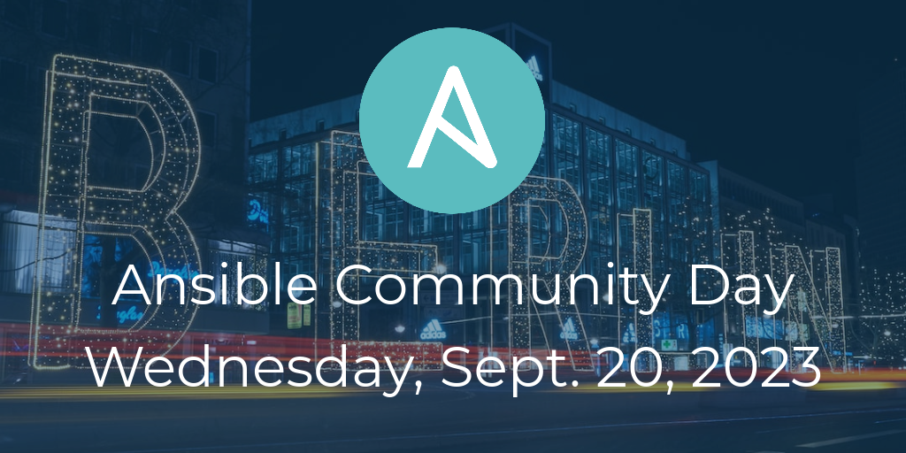

Ansible Community Day, Berlin 2023
Ansible Community Day, Berlin 2023

The Ansible Community Day is a new initiative by the Ansible Community Team at Red Hat to connect with the people using, contributing to, and developing the Ansible project worldwide. This new event complements the Ansible Contributor Summit, to put the users of Ansible in all their shapes and forms front and center.
In the last Ansible Community Day in Boston, the day right before AnsibleFest 2023, the community had the opportunity to meet in-person and get to know each other, learn a few things and share their knowledge using Ansible. It was such a great experience that we couldn't wait to have another. And here it is!
Guten Tag Berlin!
After two very successful Ansible Community Day events this year, the first in Pune, India in February and the next in Boston in May, our third event for 2023 will be held in Berlin, Germany!
Registration for Ansible Community Day Berlin 2023 is now open! If you'd like to attend, please check out the following Eventbrite page for specific details and registration.
The event is set for Wednesday, September 20, 2023. We will meet in c-base (Rungestraße 20, Berlin, Germany)
What can you expect from (or bring to!) the upcoming Ansible Community Day?
- Ansible community recap of previous announcements, status and what's new!
- User stories: Sharing of achievements and challenges using Ansible
- Live (and recorded) demos: It's showtime!
- Ansible Content Collections: how to create, contribute or use them to automate everything!
- Better together: Integrating Ansible with other tools or platforms (e.g. Kubernetes, Terraform, Dynatrace, Grafana, Jenkins, etc.)
- Learn about the Ansible ecosystem (e.g. AWX, devtools, Event-Driven Ansible) and how you can contribute to these open source projects to jumpstart your career
- And last but not least: community networking!
If any of those above caught your attention and you are thinking "I could talk about that", check the Call for Proposals below!
Call for Proposals (CFP)
We are looking for speakers!
If you have something to share with the Ansible community of users and contributors, you can submit your proposal before September 4 at 23:59 (UTC).
Presentations don't need to be ready upon submission, we are only requesting a title and abstract at this time. Any of the topics above are valid submissions, but that's not an exhaustive list. Feel free to submit any idea or proposal involving Ansible, and we will let you know if it works for the current event.
Have questions? Doubts? You can reach out to us in our Social Room
(#social:ansible.com) in the Ansible Matrix space or email the Ansible Community Team at
ansible-community@redhat.com.
Code of Conduct
For Ansible community events, we adhere to the Ansible Community Code of Conduct.